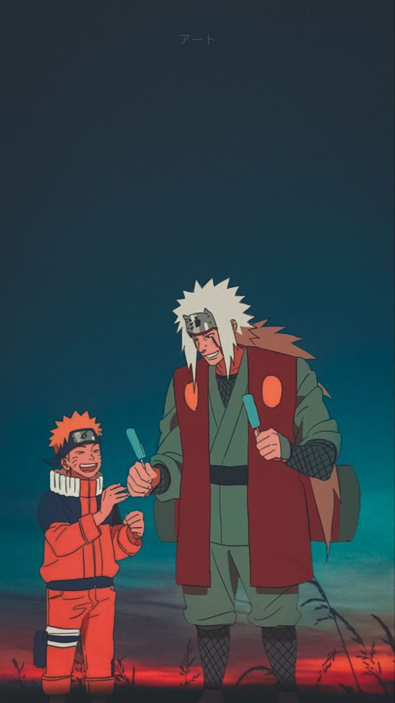

Naruto's Training and Adventures

Jariya Sensei and Naruto


Author: John Doe
Title: Naruto Enthusiast
School: Konoha Ninja Academy
Bio: A passionate Naruto fan who loves sharing insights about the series.
Explore Naruto's training under Jiraiya and his battles against powerful foes.